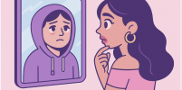
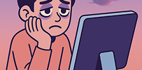

Genstart
1. Tag en test og tjek dine abstinenser.
2. Find råd og værktøjer til at navigere i stilheden.
3. Mød andre, der står i samme situation.
Se mere1. Tag en test og tjek dine abstinenser.
2. Find råd og værktøjer til at navigere i stilheden.
3. Mød andre, der står i samme situation.
Se mere
Har du brug for råd, vejledning eller bare en snak? Udfyld vores kontaktformular – vi er her for at hjælpe dig videre.
Se mereHvad sker der, når likes ikke længere findes? Pludselig er alt sort.

Hvad gør vi nu, når notifikationerne er væk?
Hvad er et liv uden sociale medier? Vi har fundet 10 gode ideer til dig, som føler at livet er gået i stå.
